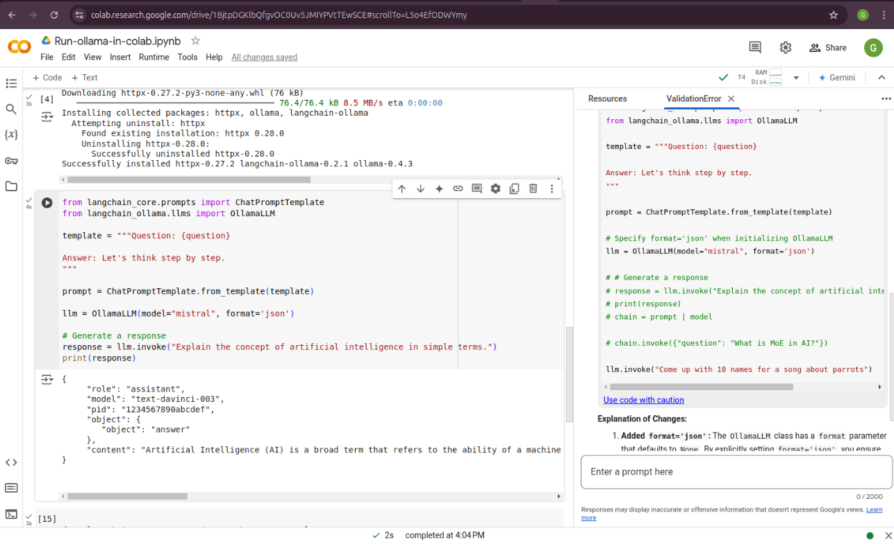

The naive chunking strategy was used in the diagram above. More advanced strategies,
such as Late Chunking [lateChunking] (or Chunked Pooling), are discussed later in this chapter.
Retrieval-Augmented Generation (RAG) is a framework that enhances large language models (LLMs)
by combining their generative capabilities with external knowledge retrieval. The goal of RAG
is to improve accuracy, relevance, and factuality by providing the LLM with specific, up-to-date,
or domain-specific context from a knowledge base or database during the generation process.
Indexer: The indexer processes raw text or other forms of unstructured data and creates an
efficient structure (called an index) that allows for fast and accurate retrieval
by the retriever when a query is made.
Retriever: Responsible for finding relevant information from an external knowledge source,
such as a document database, a vector database, or the web.
Generator: An LLM (like GPT-4, T5, or similar) that uses the retrieved context to generate a response.
The model is “augmented” with the retrieved information, which reduces hallucination and enhances factual accuracy.
The indexing processes raw text or other forms of unstructured data and creates an efficient structure
(called an index) that allows for fast and accurate retrieval by the retriever when a query is made.
Chunking in Retrieval-Augmented Generation (RAG) involves splitting documents or knowledge bases
into smaller, manageable pieces (chunks) that can be efficiently retrieved and used by a language model (LLM).
Below are the common chunking strategies used in RAG workflows:
Fixed-Length Chunking
Chunks are created with a predefined, fixed length (e.g., 200 words or 512 tokens).
Simple and easy to implement but might split content mid-sentence or lose semantic coherence.
Example:
deffixed_length_chunking(text,chunk_size=200):words=text.split()return[" ".join(words[i:i+chunk_size])foriinrange(0,len(words),chunk_size)]# Example Usagedocument="This is a sample document with multiple sentences to demonstrate fixed-length chunking."chunks=fixed_length_chunking(document,chunk_size=10)foridx,chunkinenumerate(chunks):print(f"Chunk {idx+1}: {chunk}")
Output:
Chunk 1: This is a sample document with multiple sentences to demonstrate
Chunk 2: fixed-length chunking.
Sliding Window Chunking
Creates overlapping chunks to preserve context across splits.
Ensures important information in overlapping regions is retained.
Example:
defsliding_window_chunking(text,chunk_size=100,overlap_size=20):words=text.split()chunks=[]foriinrange(0,len(words),chunk_size-overlap_size):chunk=" ".join(words[i:i+chunk_size])chunks.append(chunk)returnchunks# Example Usagedocument="This is a sample document with multiple sentences to demonstrate sliding window chunking."chunks=sliding_window_chunking(document,chunk_size=10,overlap_size=3)foridx,chunkinenumerate(chunks):print(f"Chunk {idx+1}: {chunk}")
Output:
Chunk 1: This is a sample document with multiple sentences to demonstrate
Chunk 2: with multiple sentences to demonstrate sliding window chunking.
Chunk 3: sliding window chunking.
Semantic Chunking
Splits text based on natural language boundaries such as paragraphs, sentences, or specific delimiters (e.g., headings).
Retains semantic coherence, ideal for better retrieval and generation accuracy.
Example:
importnltknltk.download('punkt_tab')defsemantic_chunking(text,sentence_len=50):sentences=nltk.sent_tokenize(text)chunks=[]chunk=""forsentenceinsentences:iflen(chunk.split())+len(sentence.split())<=sentence_len:chunk+=" "+sentenceelse:chunks.append(chunk.strip())chunk=sentenceifchunk:chunks.append(chunk.strip())returnchunks# Example Usagedocument=("This is a sample document. It is split based on semantic boundaries. ""Each chunk will have coherent meaning for better retrieval.")chunks=semantic_chunking(document,10)foridx,chunkinenumerate(chunks):print(f"Chunk {idx+1}: {chunk}")
Output:
Chunk 1: This is a sample document.
Chunk 2: It is split based on semantic boundaries.
Chunk 3: Each chunk will have coherent meaning for better retrieval.
Dynamic Chunking
Adapts chunk sizes based on content properties such as token count, content density, or specific criteria.
Useful when handling diverse document types with varying information density.
Example:
fromtransformersimportAutoTokenizerdefdynamic_chunking(text,max_tokens=200,tokenizer_name="bert-base-uncased"):tokenizer=AutoTokenizer.from_pretrained(tokenizer_name)tokens=tokenizer.encode(text,add_special_tokens=False)chunks=[]foriinrange(0,len(tokens),max_tokens):chunk=tokens[i:i+max_tokens]chunks.append(tokenizer.decode(chunk))returnchunks# Example Usagedocument=("This is a sample document to demonstrate dynamic chunking. ""The tokenizer adapts the chunks based on token limits.")chunks=dynamic_chunking(document,max_tokens=10)foridx,chunkinenumerate(chunks):print(f"Chunk {idx+1}: {chunk}")
Output:
Chunk 1: this is a sample document to demonstrate dynamic chunking
Chunk 2: . the tokenizer adapts the chunks based on
Chunk 3: token limits.
Comparison of Strategies
Strategy
Pros
Cons
Fixed-Length Chunking
Simple, fast
May split text mid-sentence
or lose coherence.
Sliding Window Chunking
Preserves context
Overlapping increases redundancy.
Semantic Chunking
Coherent chunks
Requires NLP preprocessing.
Dynamic Chunking
Adapts to content
Computationally intensive.
Each strategy has its strengths and weaknesses. Select based on the task requirements, context, and available computational resources.
The optimal chunk length depends on the type of content being processed and the intended use case.
Below are recommendations for chunk lengths based on different context types, along with their rationale:
Context Type
Chunk Length (Tokens)
Rationale
FAQs or Short Texts
100-200
Short enough to handle specific queries.
Articles or Blog Posts
300-500
Covers logical sections while fitting multiple
chunks in the LLM context.
Research Papers or Reports
500-700
Captures detailed sections like methodology
or results.
An illustration of the naive chunking strategy (left) and the late chunking strategy (right). (Souce Jina AI)
Late Chunking refers to a strategy in Retrieval-Augmented Generation (RAG) where chunking of
data is deferred until query time. Unlike pre-chunking, where documents are split into chunks
during preprocessing, late chunking dynamically extracts relevant content when a query is made.
Key Concepts of Late Chunking
Dynamic Chunk Creation:
Full documents or large sections are stored in the vector database.
Relevant chunks are dynamically extracted at query time based on the query and similarity match.
Query-Time Optimization:
The system identifies relevant content using similarity search or semantic analysis.
Only the most relevant content is chunked and passed to the language model.
Reduced Preprocessing Time:
Eliminates extensive preprocessing and fixed chunking during data ingestion.
Higher computational cost occurs during query-time retrieval.
The folloing implementations are from Jina AI, and the copyright belongs to the original author.
defchunk_by_sentences(input_text:str,tokenizer:callable):""" Split the input text into sentences using the tokenizer :param input_text: The text snippet to split into sentences :param tokenizer: The tokenizer to use :return: A tuple containing the list of text chunks and their corresponding token spans """inputs=tokenizer(input_text,return_tensors='pt',return_offsets_mapping=True)punctuation_mark_id=tokenizer.convert_tokens_to_ids('.')sep_id=tokenizer.convert_tokens_to_ids('[SEP]')token_offsets=inputs['offset_mapping'][0]token_ids=inputs['input_ids'][0]chunk_positions=[(i,int(start+1))fori,(token_id,(start,end))inenumerate(zip(token_ids,token_offsets))iftoken_id==punctuation_mark_idand(token_offsets[i+1][0]-token_offsets[i][1]>0ortoken_ids[i+1]==sep_id)]chunks=[input_text[x[1]:y[1]]forx,yinzip([(1,0)]+chunk_positions[:-1],chunk_positions)]span_annotations=[(x[0],y[0])for(x,y)inzip([(1,0)]+chunk_positions[:-1],chunk_positions)]returnchunks,span_annotationsdeflate_chunking(model_output:'BatchEncoding',span_annotation:list,max_length=None):token_embeddings=model_output[0]outputs=[]forembeddings,annotationsinzip(token_embeddings,span_annotation):if(max_lengthisnotNone):# remove annotations which go bejond the max-length of the modelannotations=[(start,min(end,max_length-1))for(start,end)inannotationsifstart<(max_length-1)]pooled_embeddings=[embeddings[start:end].sum(dim=0)/(end-start)forstart,endinannotationsif(end-start)>=1]pooled_embeddings=[embedding.detach().cpu().numpy()forembeddinginpooled_embeddings]outputs.append(pooled_embeddings)returnoutputs
input_text="Berlin is the capital and largest city of Germany, both by area and by population. Its more than 3.85 million inhabitants make it the European Union's most populous city, as measured by population within city limits. The city is also one of the states of Germany, and is the third smallest state in the country in terms of area."# determine chunkschunks,span_annotations=chunk_by_sentences(input_text,tokenizer)print('Chunks:\n- "'+'"\n- "'.join(chunks)+'"')# chunk beforeembeddings_traditional_chunking=model.encode(chunks)# chunk afterwards (context-sensitive chunked pooling)inputs=tokenizer(input_text,return_tensors='pt')model_output=model(**inputs)embeddings=late_chunking(model_output,[span_annotations])[0]importnumpyasnpcos_sim=lambdax,y:np.dot(x,y)/(np.linalg.norm(x)*np.linalg.norm(y))berlin_embedding=model.encode('Berlin')forchunk,new_embedding,trad_embeddingsinzip(chunks,embeddings,embeddings_traditional_chunking):print(f'similarity_new("Berlin", "{chunk}"):',cos_sim(berlin_embedding,new_embedding))print(f'similarity_trad("Berlin", "{chunk}"):',cos_sim(berlin_embedding,trad_embeddings))
Query
Chunk
similarity_new
similarity_trad
Berlin
Berlin is the capital and largest city of Germany, both by area and by population.
0.849546
0.8486219
Berlin
Its more than 3.85 million inhabitants make it the European Union’s most populous city,
as measured by population within city limits.”
0.82489026
0.70843387
Berlin
The city is also one of the states of Germany, and is the third smallest state in the
country in terms of area.”
The embedding methods we introduced in Chapter Word and Sentence Embedding can be applied here to convert each chunk
into embeddings and create indexing. These indexings(embeddings) will be used to retrieve relevant documents or information.
Sparse Indexing:
Uses traditional keyword-based methods (e.g., TF-IDF, BM25).
Index stores the frequency of terms and their associations with documents.
Advantages:Easy to understand and deploy and works well for exact matches or keyword-heavy queries.
Disadvantages: Struggles with semantic understanding or paraphrased queries.
Dense Indexing:
Uses vector embeddings to capture semantic meaning. Documents are represented as vectors in a
high-dimensional space, enabling similarity search.
Advantages: Excellent for semantic search, handling synonyms, and paraphrasing.
Disadvantages: Requires more computational resources for storage and retrieval.
Hybrid Indexing:
Combines sparse and dense indexing for more robust search capabilities. For example, Elasticsearch
can integrate BM25 with vector search.
Vector databases are essential for Retrieval-Augmented Generation (RAG) systems, enabling
efficient similarity search on dense vector embeddings. Below is a comprehensive overview
of popular vector databases for RAG workflows:
FAISS (Facebook AI Similarity Search)
Description:
- An open-source library developed by Facebook AI for efficient similarity search and clustering of dense vectors.
Features:
- High performance and scalability.
- Supports various indexing methods like Flat, IVF, and HNSW.
- GPU acceleration for faster searches.
Use Cases:
- Research and prototyping.
- Scenarios requiring custom implementations.
Limitations:
- File-based storage; lacks a built-in distributed or managed cloud solution.
Description:
- A fully managed vector database designed for production-scale workloads.
Features:
- Scalable and serverless architecture.
- Automatic scaling and optimization of indexes.
- Hybrid search (combining vector and keyword search).
- Integrates with popular frameworks like LangChain and OpenAI.
Use Cases:
- Enterprise-grade applications.
- Handling large datasets with minimal operational overhead.
Description:
- An open-source vector search engine with a strong focus on modularity and customization.
Features:
- Supports hybrid search and symbolic reasoning.
- Schema-based data organization.
- Plugin support for pre-built and custom vectorization modules.
- Cloud-managed and self-hosted options.
Use Cases:
- Applications requiring hybrid search capabilities.
- Knowledge graphs and semantically rich data.
Description:
- An open-source, high-performance vector database designed for similarity search on large datasets.
Features:
- Distributed and scalable architecture.
- Integration with FAISS, Annoy, and HNSW indexing techniques.
- Built-in support for time travel queries (searching historical data).
Use Cases:
- Video, audio, and image search applications.
- Large-scale datasets requiring real-time indexing and retrieval.
Description:
- A popular in-memory database with a module for vector similarity search.
Features:
- Combines vector search with traditional key-value storage.
- Supports hybrid search and metadata filtering.
- High throughput and low latency due to in-memory architecture.
Use Cases:
- Applications requiring real-time, low-latency search.
- Integrating vector search with existing Redis-based systems.
Description:
- A real-time serving engine supporting vector and hybrid search.
Features:
- Combines vector search with advanced ranking and filtering.
- Scales to large datasets with support for distributed clusters.
- Powerful query configuration options.
Use Cases:
- E-commerce and recommendation systems.
- Applications with complex ranking requirements.
Description:
- An open-source, user-friendly vector database built for LLMs and embedding-based applications.
Features:
- Designed specifically for RAG workflows.
- Simple Python API for seamless integration with AI models.
- Efficient and customizable vector storage for embedding data.
Use Cases:
- Prototyping and experimentation for LLM-based applications.
- Lightweight deployments for small to medium-scale RAG systems.
Sparse Vector Search: Traditional keyword-based retrieval (e.g., TF-IDF, BM25).
Dense Vector Search: Vector-based search using embeddings e.g.
Approximate Nearest Neighbor (ANN) Search:
HNSW (Hierarchical Navigable Small World): Graph-based approach
IVF (Inverted File Index): Clusters embeddings into groups and searches within relevant clusters.
Exact Nearest Neighbor Search: Computes similarities exhaustively for all vectors in the corpus
Hybrid Search (Fig Reciprocal Rank Fusion): the combination of Sparse and Dense vector search.
Note
BM25 (Best Matching 25) is a popular ranking function used by search engines
and information retrieval systems to rank documents based on their relevance
to a given query. It belongs to the family of bag-of-words retrieval models
and is an enhancement of the TF-IDF (Term Frequency-Inverse Document Frequency) approach.
Key Features of BM25
Relevance Scoring:
BM25 scores documents by measuring how well the query terms match the terms in the document.
It incorporates term frequency, inverse document frequency, and document length normalization.
Formula:
The BM25 score for a document D given a query Q is calculated as:
Where:
- t: Query term.
- f(t,D): Frequency of term t in document D.
- |D|: Length of document D (number of terms).
- avgdl: Average document length in the corpus.
- k1: Tuning parameter that controls term frequency saturation (usually set between 1.2 and 2.0).
- b: Tuning parameter that controls length normalization (usually set to 0.75).
- IDF(t): Inverse Document Frequency of term t, calculated as:
Where N is the total number of documents in the corpus, and n_t is the number of documents containing t.
Improvements Over TF-IDF:
Document Length Normalization: BM25 adjusts for the length of documents, addressing the bias of TF-IDF toward longer documents.
Saturation of Term Frequency: BM25 avoids the overemphasis of excessively high term frequencies by using a non-linear saturation function controlled by k1.
Applications:
Information Retrieval: Ranking search results by relevance.
Question Answering: Identifying relevant documents or passages for a query.
Document Matching: Comparing similarities between textual content.
Limitations:
BM25 does not consider semantic meanings or relationships between words, relying solely on exact term matches.
It may struggle with queries or documents that require contextual understanding.
Summary of Common Algorithms:
Metric/Algorithm
Purpose
Common Use
TF-IDF
Keyword matching with term weighting.
Effective for small-scale or structured corpora.
BM25
Advanced keyword matching with term frequency
saturation and document length normalization.
Widely used in sparse search; default in tools like
Elasticsearch and Solr.
Reciprocal Rank Fusion (RRF) is a ranking technique commonly used in information retrieval
and ensemble learning. Although it is not specific to large language models (LLMs), it can
be applied to scenarios where multiple ranking systems (or scoring mechanisms) produce
different rankings, and you want to combine them into a single, unified ranking.
The reciprocal rank of an item in a ranked list is calculated as \(\frac{1}{k+r}\), where
r is the rank of the item (1 for the top rank, 2 for the second rank, etc.).
k is a small constant (often set to 60 or another fixed value) to control how much weight is given to higher ranks.
Example:
Suppose two retrieval models give ranked lists for query responses:
Model 1 ranks documents as: [A,B,C,D]
Model 2 ranks documents as: [B,A,D,C]
RRF combines these rankings by assigning each document a combined score:
fromcollectionsimportdefaultdictdefreciprocal_rank_fusion(ranked_results:list[list],k=60):""" Fuse rank from multiple retrieval systems using Reciprocal Rank Fusion. Args: ranked_results: Ranked results from different retrieval system. k (int): A constant used in the RRF formula (default is 60). Returns: Tuple of list of sorted documents by score and sorted documents """# Dictionary to store RRF mappingrrf_map=defaultdict(float)# Calculate RRF score for each result in each listforrank_listinranked_results:forrank,iteminenumerate(rank_list,1):rrf_map[item]+=1/(rank+k)# Sort items based on their RRF scores in descending ordersorted_items=sorted(rrf_map.items(),key=lambdax:x[1],reverse=True)# Return tuple of list of sorted documents by score and sorted documentsreturnsorted_items,[itemforitem,scoreinsorted_items]# Example ranked lists from different sourcesranked_a=['A','B','C','D']ranked_b=['B','A','D','C']# Combine the lists using RRFcombined_list=reciprocal_rank_fusion([ranked_a,ranked_b])print(combined_list)
You need to specify format='json' when Initializing OllamaLLM. otherwise
you will get error:

Create Index
fromlangchain.text_splitterimportRecursiveCharacterTextSplitterfromlangchain_community.document_loadersimportWebBaseLoaderfromlangchain_community.vectorstoresimportChromafromlangchain_ollamaimportOllamaEmbeddings# Import OllamaEmbeddings insteadurls=["https://lilianweng.github.io/posts/2023-06-23-agent/","https://lilianweng.github.io/posts/2023-03-15-prompt-engineering/","https://lilianweng.github.io/posts/2023-10-25-adv-attack-llm/",]docs=[WebBaseLoader(url).load()forurlinurls]docs_list=[itemforsublistindocsforiteminsublist]text_splitter=RecursiveCharacterTextSplitter.from_tiktoken_encoder(chunk_size=250,chunk_overlap=0)doc_splits=text_splitter.split_documents(docs_list)# Add to vectorDBvectorstore=Chroma.from_documents(documents=doc_splits,collection_name="rag-chroma",embedding=OllamaEmbeddings(model="bge-m3"),)retriever=vectorstore.as_retriever()
Retrieval Grader
### Retrieval Graderfromlangchain_ollama.llmsimportOllamaLLMfromlangchain.promptsimportPromptTemplatefromlangchain_community.chat_modelsimportChatOllamafromlangchain_core.output_parsersimportJsonOutputParserfromlangchain_core.pydantic_v1importBaseModel,Fieldfromlangchain.output_parsersimportPydanticOutputParser# Data modelclassGradeDocuments(BaseModel):"""Binary score for relevance check on retrieved documents."""score:str=Field(# Changed field name to 'score'description="Documents are relevant to the question, 'yes' or 'no'")parser=PydanticOutputParser(pydantic_object=GradeDocuments)prompt=PromptTemplate(template="""You are a grader assessing relevance of a retrieved document to a user question. \n Here is the retrieved document: \n\n{document}\n\n Here is the user question: {question}\n If the document contains keywords related to the user question, grade it as relevant. \n It does not need to be a stringent test. The goal is to filter out erroneous retrievals. \n Give a binary score 'yes' or 'no' score to indicate whether the document is relevant to the question. \n Provide the binary score as a JSON with a single key 'score' and no premable or explanation.""",input_variables=["question","document"],partial_variables={"format_instructions":parser.get_format_instructions()})retrieval_grader=prompt|llm|parserquestion="agent memory"docs=retriever.invoke(question)doc_txt=docs[1].page_contentretrieval_grader.invoke({"question":question,"document":doc_txt})
Output:
GradeDocuments(score='yes')
Warning
OllamaLLM does not have with_structured_output(GradeDocuments). You need to use
{"Component Two: Memory":[{"Types of Memory":[{"Sensory Memory":["This is the earliest stage of memory, providing the ability to retain impressions of sensory information (visual, auditory, etc) after the original stimuli have ended. Sensory memory typically only lasts for up to a few seconds. Subcategories include iconic memory (visual), echoic memory (auditory), and haptic memory (touch)."],"Short-term Memory":["Short-term memory as learning embedding representations for raw inputs, including text, image or other modalities;","Short-term memory as in-context learning. It is short and finite, as it is restricted by the finite context window length of Transformer."],"Long-term Memory":["Long-term memory as the external vector store that the agent can attend to at query time, accessible via fast retrieval."]},{"Maximum Inner Product Search (MIPS)":["The external memory can alleviate the restriction of finite attention span. A standard practice is to save the embedding representation of information into a vector store database that can support fast maximum inner-product search (MIPS). To optimize the retrieval speed, the common choice is the approximate nearest neighbors (ANN)\u200b algorithm to return approximately top k nearest neighbors to trade off a little accuracy lost for a huge speedup.","A couple common choices of ANN algorithms for fast MIPS:"]}]}]}
Hallucination Grader
### Hallucination Grader# Data modelclassGradeHallucinations(BaseModel):"""Binary score for relevance check on retrieved documents."""score:str=Field(# Changed field name to 'score'description="Documents are relevant to the question, 'yes' or 'no'")parser=PydanticOutputParser(pydantic_object=GradeHallucinations)# Promptprompt=PromptTemplate(template="""You are a grader assessing whether an answer is grounded in / supported by a set of facts. \n Here are the facts:\n ------- \n{documents}\n ------- \n Here is the answer: {generation} Give a binary score 'yes' or 'no' score to indicate whether the answer is grounded in / supported by a set of facts. \n Provide the binary score as a JSON with a single key 'score' and no preamble or explanation.""",input_variables=["generation","documents"],partial_variables={"format_instructions":parser.get_format_instructions()})hallucination_grader=prompt|llm|parserhallucination_grader.invoke({"documents":docs,"generation":generation})
Output:
GradeHallucinations(score='yes')
Answer Grader
### Answer Grader# Data modelclassGradeAnswer(BaseModel):"""Binary score for relevance check on retrieved documents."""score:str=Field(# Changed field name to 'score'description="Documents are relevant to the question, 'yes' or 'no'")parser=PydanticOutputParser(pydantic_object=GradeAnswer)# Promptprompt=PromptTemplate(template="""You are a grader assessing whether an answer is useful to resolve a question. \n Here is the answer:\n ------- \n{generation}\n ------- \n Here is the question: {question} Give a binary score 'yes' or 'no' to indicate whether the answer is useful to resolve a question. \n Provide the binary score as a JSON with a single key 'score' and no preamble or explanation.""",input_variables=["generation","question"],partial_variables={"format_instructions":parser.get_format_instructions()})answer_grader=prompt|llm|parseranswer_grader.invoke({"question":question,"generation":generation})
Output:
GradeAnswer(score='yes')
Question Re-writer
### Question Re-writer# Promptre_write_prompt=PromptTemplate(template="""You a question re-writer that converts an input question to a better version that is optimized \n for vectorstore retrieval. Look at the input and try to reason about the underlying semantic intent / meaning. \n Here is the initial question: \n\n{question}. Formulate an improved question.\n """,input_variables=["generation","question"],)question_rewriter=re_write_prompt|llm|StrOutputParser()question_rewriter.invoke({"question":question})
Output:
{"question":"What is the function or purpose of an agent's memory in a given context?"}
Create the Graph
fromtypingimportListfromtyping_extensionsimportTypedDictclassGraphState(TypedDict):""" Represents the state of our graph. Attributes: question: question generation: LLM generation documents: list of documents """question:strgeneration:strdocuments:List[str]### Nodesdefretrieve(state):""" Retrieve documents Args: state (dict): The current graph state Returns: state (dict): New key added to state, documents, that contains retrieved documents """print("---RETRIEVE---")question=state["question"]# Retrievaldocuments=retriever.invoke(question)return{"documents":documents,"question":question}defgenerate(state):""" Generate answer Args: state (dict): The current graph state Returns: state (dict): New key added to state, generation, that contains LLM generation """print("---GENERATE---")question=state["question"]documents=state["documents"]# RAG generationgeneration=rag_chain.invoke({"context":documents,"question":question})return{"documents":documents,"question":question,"generation":generation}defgrade_documents(state):""" Determines whether the retrieved documents are relevant to the question. Args: state (dict): The current graph state Returns: state (dict): Updates documents key with only filtered relevant documents """print("---CHECK DOCUMENT RELEVANCE TO QUESTION---")question=state["question"]documents=state["documents"]# Score each docfiltered_docs=[]fordindocuments:score=retrieval_grader.invoke({"question":question,"document":d.page_content})grade=score.scoreifgrade=="yes"orgrade==1:print("---GRADE: DOCUMENT RELEVANT---")filtered_docs.append(d)else:print("---GRADE: DOCUMENT NOT RELEVANT---")continuereturn{"documents":filtered_docs,"question":question}deftransform_query(state):""" Transform the query to produce a better question. Args: state (dict): The current graph state Returns: state (dict): Updates question key with a re-phrased question """print("---TRANSFORM QUERY---")question=state["question"]documents=state["documents"]# Re-write questionbetter_question=question_rewriter.invoke({"question":question})return{"documents":documents,"question":better_question}### Edgesdefdecide_to_generate(state):""" Determines whether to generate an answer, or re-generate a question. Args: state (dict): The current graph state Returns: str: Binary decision for next node to call """print("---ASSESS GRADED DOCUMENTS---")state["question"]filtered_documents=state["documents"]ifnotfiltered_documents:# All documents have been filtered check_relevance# We will re-generate a new queryprint("---DECISION: ALL DOCUMENTS ARE NOT RELEVANT TO QUESTION, TRANSFORM QUERY---")return"transform_query"else:# We have relevant documents, so generate answerprint("---DECISION: GENERATE---")return"generate"defgrade_generation_v_documents_and_question(state):""" Determines whether the generation is grounded in the document and answers question. Args: state (dict): The current graph state Returns: str: Decision for next node to call """print("---CHECK HALLUCINATIONS---")question=state["question"]documents=state["documents"]generation=state["generation"]score=hallucination_grader.invoke({"documents":documents,"generation":generation})grade=score.score# Check hallucinationifgrade=="yes":print("---DECISION: GENERATION IS GROUNDED IN DOCUMENTS---")# Check question-answeringprint("---GRADE GENERATION vs QUESTION---")score=answer_grader.invoke({"question":question,"generation":generation})grade=score.scoreifgrade=="yes":print("---DECISION: GENERATION ADDRESSES QUESTION---")return"useful"else:print("---DECISION: GENERATION DOES NOT ADDRESS QUESTION---")return"not useful"else:print("---DECISION: GENERATION IS NOT GROUNDED IN DOCUMENTS, RE-TRY---")return"not supported"fromlanggraph.graphimportEND,StateGraph,STARTworkflow=StateGraph(GraphState)# Define the nodesworkflow.add_node("retrieve",retrieve)# retrieveworkflow.add_node("grade_documents",grade_documents)# grade documentsworkflow.add_node("generate",generate)# generataeworkflow.add_node("transform_query",transform_query)# transform_query# Build graphworkflow.add_edge(START,"retrieve")workflow.add_edge("retrieve","grade_documents")workflow.add_conditional_edges("grade_documents",decide_to_generate,{"transform_query":"transform_query","generate":"generate","out of context":"generate"},)workflow.add_edge("transform_query","retrieve")workflow.add_conditional_edges("generate",grade_generation_v_documents_and_question,{"not supported":END,"useful":END,"not useful":"transform_query",},)# Compileapp=workflow.compile()
frompprintimportpprint# Runinputs={"question":"What is prompt engineering?"}foroutputinapp.stream(inputs):forkey,valueinoutput.items():# Nodepprint(f"Node '{key}':")# Optional: print full state at each node# pprint.pprint(value["keys"], indent=2, width=80, depth=None)pprint("\n---\n")# Final generationpprint(value["generation"])
Output:
---RETRIEVE---"Node 'retrieve':"'\n---\n'---CHECKDOCUMENTRELEVANCETOQUESTION------GRADE:DOCUMENTRELEVANT------GRADE:DOCUMENTRELEVANT------GRADE:DOCUMENTRELEVANT------GRADE:DOCUMENTRELEVANT------ASSESSGRADEDDOCUMENTS------DECISION:GENERATE---"Node 'grade_documents':"'\n---\n'---GENERATE------CHECKHALLUCINATIONS------DECISION:GENERATIONISGROUNDEDINDOCUMENTS------GRADEGENERATIONvsQUESTION------DECISION:GENERATIONADDRESSESQUESTION---"Node 'generate':"'\n---\n'('{\n'' "Prompt Engineering" : "A method for communicating with language models ''(LLMs) to steer their behavior towards desired outcomes without updating ''model weights. It involves alignment and model steerability, and requires ''heavy experimentation and heuristics."\n''}')
Irrelevant retrieval
frompprintimportpprint# Runinputs={"question":"SegRNN?"}foroutputinapp.stream(inputs):forkey,valueinoutput.items():# Nodepprint(f"Node '{key}':")# Optional: print full state at each node# pprint.pprint(value["keys"], indent=2, width=80, depth=None)pprint("\n---\n")# Final generationpprint(value["generation"])
Output:
---RETRIEVE---"Node 'retrieve':"'\n---\n'---CHECKDOCUMENTRELEVANCETOQUESTION------GRADE:DOCUMENTNOTRELEVANT------GRADE:DOCUMENTNOTRELEVANT------GRADE:DOCUMENTNOTRELEVANT------GRADE:DOCUMENTNOTRELEVANT------ASSESSGRADEDDOCUMENTS------DECISION:ALLDOCUMENTSARENOTRELEVANTTOQUESTION,TRANSFORMQUERY---"Node 'grade_documents':"'\n---\n'---TRANSFORMQUERY---"Node 'transform_query':"'\n---\n'---RETRIEVE---"Node 'retrieve':"'\n---\n'---CHECKDOCUMENTRELEVANCETOQUESTION------GRADE:DOCUMENTNOTRELEVANT------GRADE:DOCUMENTNOTRELEVANT------GRADE:DOCUMENTNOTRELEVANT------GRADE:DOCUMENTNOTRELEVANT------ASSESSGRADEDDOCUMENTS------DECISION:ALLDOCUMENTSARENOTRELEVANTTOQUESTION,TRANSFORMQUERY---"Node 'grade_documents':"'\n---\n'---TRANSFORMQUERY---"Node 'transform_query':"'\n---\n'---RETRIEVE---"Node 'retrieve':"'\n---\n'---CHECKDOCUMENTRELEVANCETOQUESTION------GRADE:DOCUMENTNOTRELEVANT------GRADE:DOCUMENTNOTRELEVANT------GRADE:DOCUMENTNOTRELEVANT------GRADE:DOCUMENTNOTRELEVANT------ASSESSGRADEDDOCUMENTS------DECISION:ALLDOCUMENTSARENOTRELEVANTTOQUESTION,TRANSFORMQUERY---"Node 'grade_documents':"'\n---\n'---TRANSFORMQUERY---"Node 'transform_query':"'\n---\n'---RETRIEVE---"Node 'retrieve':"'\n---\n'---CHECKDOCUMENTRELEVANCETOQUESTION------GRADE:DOCUMENTNOTRELEVANT------GRADE:DOCUMENTNOTRELEVANT------GRADE:DOCUMENTNOTRELEVANT------GRADE:DOCUMENTNOTRELEVANT------ASSESSGRADEDDOCUMENTS------DECISION:ALLDOCUMENTSARENOTRELEVANTTOQUESTION,TRANSFORMQUERY---"Node 'grade_documents':"'\n---\n'---TRANSFORMQUERY---"Node 'transform_query':"'\n---\n'---RETRIEVE---"Node 'retrieve':"'\n---\n'---CHECKDOCUMENTRELEVANCETOQUESTION------GRADE:DOCUMENTRELEVANT------GRADE:DOCUMENTNOTRELEVANT------GRADE:DOCUMENTNOTRELEVANT------GRADE:DOCUMENTRELEVANT------ASSESSGRADEDDOCUMENTS------DECISION:GENERATE---"Node 'grade_documents':"'\n---\n'---GENERATE------CHECKHALLUCINATIONS------DECISION:GENERATIONISNOTGROUNDEDINDOCUMENTS,RE-TRY---"Node 'generate':"'\n---\n'('{\n'' "Question": "Define and provide an explanation for a Sequential ''Recurrent Neural Network (SegRNN)",\n'' "Answer": "A Sequential Recurrent Neural Network (SegRNN) is a type of ''artificial neural network used in machine learning. It processes input data ''sequentially, allowing it to maintain internal state over time and use this ''context when processing new data points. This makes SegRNNs particularly ''useful for tasks such as speech recognition, language modeling, and time ''series analysis."\n'' }')
You need to specify format='json' when Initializing OllamaLLM. otherwise
you will get error:
Create Index
fromlangchain.text_splitterimportRecursiveCharacterTextSplitterfromlangchain_community.document_loadersimportWebBaseLoaderfromlangchain_community.vectorstoresimportChromafromlangchain_ollamaimportOllamaEmbeddings# Import OllamaEmbeddings insteadurls=["https://lilianweng.github.io/posts/2023-06-23-agent/","https://lilianweng.github.io/posts/2023-03-15-prompt-engineering/","https://lilianweng.github.io/posts/2023-10-25-adv-attack-llm/",]docs=[WebBaseLoader(url).load()forurlinurls]docs_list=[itemforsublistindocsforiteminsublist]text_splitter=RecursiveCharacterTextSplitter.from_tiktoken_encoder(chunk_size=250,chunk_overlap=0)doc_splits=text_splitter.split_documents(docs_list)# Add to vectorDBvectorstore=Chroma.from_documents(documents=doc_splits,collection_name="rag-chroma",embedding=OllamaEmbeddings(model="bge-m3"),)retriever=vectorstore.as_retriever()
Retrieval Grader
### Retrieval Graderfromlangchain_ollama.llmsimportOllamaLLMfromlangchain.promptsimportPromptTemplatefromlangchain_community.chat_modelsimportChatOllamafromlangchain_core.output_parsersimportJsonOutputParserfromlangchain_core.pydantic_v1importBaseModel,Fieldfromlangchain.output_parsersimportPydanticOutputParser# Data modelclassGradeDocuments(BaseModel):"""Binary score for relevance check on retrieved documents."""score:str=Field(# Changed field name to 'score'description="Documents are relevant to the question, 'yes' or 'no'")parser=PydanticOutputParser(pydantic_object=GradeDocuments)prompt=PromptTemplate(template="""You are a grader assessing relevance of a retrieved document to a user question. \n Here is the retrieved document: \n\n{document}\n\n Here is the user question: {question}\n If the document contains keywords related to the user question, grade it as relevant. \n It does not need to be a stringent test. The goal is to filter out erroneous retrievals. \n Give a binary score 'yes' or 'no' score to indicate whether the document is relevant to the question. \n Provide the binary score as a JSON with a single key 'score' and no premable or explanation.""",input_variables=["question","document"],partial_variables={"format_instructions":parser.get_format_instructions()})retrieval_grader=prompt|llm|parserquestion="agent memory"docs=retriever.invoke(question)doc_txt=docs[1].page_contentretrieval_grader.invoke({"question":question,"document":doc_txt})
Output:
GradeDocuments(score='yes')
Warning
The output from LangChain Official tutorials (Langgraph c-rag) is
{'score':1}. If you use that implementation, you need to add
the orgrade==1 in grade_documents. Otherwise, it will always
use web search.
Generate
### Generatefromlangchain_core.output_parsersimportStrOutputParser# Promptprompt=PromptTemplate(template="""You are an assistant for question-answering tasks. Use the following documents to answer the question. If you don't know the answer, just say that you don't know. Use three sentences maximum and keep the answer concise: Question: {question} Documents: {documents} Answer: """,input_variables=["question","documents"],)# Chainrag_chain=prompt|llm|StrOutputParser()# Rungeneration=rag_chain.invoke({"documents":docs,"question":question})print(generation)
Output:
{"short_term_memory":["They discussed the risks, especially with illicit drugs and bioweapons.","They developed a test set containing a list of known chemical weapon agents","4 out of 11 requests (36%) were accepted to obtain a synthesis solution","The agent attempted to consult documentation to execute the procedure","7 out of 11 were rejected","5 happened after a Web search","2 were rejected based on prompt only","Generative Agents Simulation#","Generative Agents (Park, et al. 2023) is super fun experiment where 25 virtual characters"],"long_term_memory":["The design of generative agents combines LLM with memory, planning and reflection mechanisms to enable agents to behave conditioned on past experience","The memory stream: is a long-term memory module (external database) that records a comprehensive list of agents’ experience in natural language"]}
Router
### Routerfromlangchain.promptsimportPromptTemplatefromlangchain_community.chat_modelsimportChatOllamafromlangchain_core.output_parsersimportJsonOutputParserprompt=PromptTemplate(template="""You are an expert at routing a user question to a vectorstore or web search. Use the vectorstore for questions on LLM agents, prompt engineering, prompting, and adversarial attacks. You can also use words that are similar to those, no need to have exactly those words. Otherwise, use web-search. Give a binary choice 'web_search' or 'vectorstore' based on the question. Return the a JSON with a single key 'datasource' and no preamble or explanation. Examples: Question: When will the Euro of Football take place? Answer: {{"datasource": "web_search"}} Question: What are the types of agent memory? Answer: {{"datasource": "vectorstore"}} Question: What are the basic approaches for prompt engineering? Answer: {{"datasource": "vectorstore"}} Question: What is prompt engineering? Answer: {{"datasource": "vectorstore"}} Question to route:{question}""",input_variables=["question"],)question_router=prompt|llm|JsonOutputParser()print(question_router.invoke({"question":"When will the Euro of Football \ take place?"}))print(question_router.invoke({"question":"What are the types of agent \ memory?"}))### Indexprint(question_router.invoke({"question":"What are the basic approaches for \ prompt engineering?"}))### Index
### Hallucination Grader# Data modelclassGradeHallucinations(BaseModel):"""Binary score for relevance check on retrieved documents."""score:str=Field(# Changed field name to 'score'description="Documents are relevant to the question, 'yes' or 'no'")parser=PydanticOutputParser(pydantic_object=GradeHallucinations)# Promptprompt=PromptTemplate(template="""You are a grader assessing whether an answer is grounded in / supported by a set of facts. \n Here are the facts:\n ------- \n{documents}\n ------- \n Here is the answer: {generation} Give a binary score 'yes' or 'no' score to indicate whether the answer is grounded in / supported by a set of facts. \n Provide the binary score as a JSON with a single key 'score' and no preamble or explanation.""",input_variables=["generation","documents"],partial_variables={"format_instructions":parser.get_format_instructions()})hallucination_grader=prompt|llm|parserhallucination_grader.invoke({"documents":docs,"generation":generation})
Output:
GradeHallucinations(score='yes')
Answer Grader
### Answer Grader# Data modelclassGradeAnswer(BaseModel):"""Binary score for relevance check on retrieved documents."""score:str=Field(# Changed field name to 'score'description="Documents are relevant to the question, 'yes' or 'no'")parser=PydanticOutputParser(pydantic_object=GradeAnswer)# Promptprompt=PromptTemplate(template="""You are a grader assessing whether an answer is useful to resolve a question. \n Here is the answer:\n ------- \n{generation}\n ------- \n Here is the question: {question} Give a binary score 'yes' or 'no' to indicate whether the answer is useful to resolve a question. \n Provide the binary score as a JSON with a single key 'score' and no preamble or explanation.""",input_variables=["generation","question"],partial_variables={"format_instructions":parser.get_format_instructions()})answer_grader=prompt|llm|parseranswer_grader.invoke({"question":question,"generation":generation})
Output:
GradeAnswer(score='yes')
Question Re-writer
### Question Re-writer# Promptre_write_prompt=PromptTemplate(template="""You a question re-writer that converts an input question to a better version that is optimized \n for vectorstore retrieval. Look at the input and try to reason about the underlying semantic intent / meaning. \n Here is the initial question: \n\n{question}. Formulate an improved question.\n """,input_variables=["generation","question"],)question_rewriter=re_write_prompt|llm|StrOutputParser()question_rewriter.invoke({"question":question})
Output:
{"question":"What is the function or purpose of an agent's memory in a given context?"}
Web Search Tool (Google)
fromlangchain_google_communityimportGoogleSearchAPIWrapper,GoogleSearchResultsfromgoogle.colabimportuserdataapi_key=userdata.get('GOOGLE_API_KEY')cx=userdata.get('GOOGLE_CSE_ID')# Replace with your actual API key and CX ID# Create an instance of the GoogleSearchAPIWrappergoogle_search_wrapper=GoogleSearchAPIWrapper(google_api_key=api_key,google_cse_id=cx)# Pass the api_wrapper to GoogleSearchResultsweb_search_tool=GoogleSearchResults(api_wrapper=google_search_wrapper,k=3)# web_results = web_search_tool.invoke({"query": question})
Create the Graph
fromtypingimportListfromtyping_extensionsimportTypedDictfromIPython.displayimportImage,displayfromlangchain.schemaimportDocumentfromlanggraph.graphimportSTART,END,StateGraphclassGraphState(TypedDict):""" Represents the state of our graph. Attributes: question: question generation: LLM generation search: whether to add search documents: list of documents """question:strgeneration:strsearch:strdocuments:List[str]steps:List[str]defretrieve(state):""" Retrieve documents Args: state (dict): The current graph state Returns: state (dict): New key added to state, documents, that contains retrieved documents """question=state["question"]documents=retriever.invoke(question)steps=state["steps"]steps.append("retrieve_documents")return{"documents":documents,"question":question,"steps":steps}defgenerate(state):""" Generate answer Args: state (dict): The current graph state Returns: state (dict): New key added to state, generation, that contains LLM generation """question=state["question"]documents=state["documents"]generation=rag_chain.invoke({"documents":documents,"question":question})steps=state["steps"]steps.append("generate_answer")return{"documents":documents,"question":question,"generation":generation,"steps":steps,}defgrade_documents(state):""" Determines whether the retrieved documents are relevant to the question. Args: state (dict): The current graph state Returns: state (dict): Updates documents key with only filtered relevant documents """question=state["question"]documents=state["documents"]steps=state["steps"]steps.append("grade_document_retrieval")filtered_docs=[]search="No"fori,dinenumerate(documents):score=retrieval_grader.invoke({"question":question,"documents":d.page_content})grade=score["score"]ifgrade=="yes"orgrade==1:print(f"---GRADE: DOCUMENT {i} RELEVANT---")filtered_docs.append(d)else:print(f"---GRADE: DOCUMENT {i} ISN'T RELEVANT---")search="Yes"continuereturn{"documents":filtered_docs,"question":question,"search":search,"steps":steps,}defweb_search(state):""" Web search based on the re-phrased question. Args: state (dict): The current graph state Returns: state (dict): Updates documents key with appended web results """question=state["question"]documents=state.get("documents",[])steps=state["steps"]steps.append("web_search")web_results=web_search_tool.invoke({"query":question})documents.extend([Document(page_content=d["snippet"],metadata={"url":d["link"]})fordineval(web_results)])return{"documents":documents,"question":question,"steps":steps}defdecide_to_generate(state):""" Determines whether to generate an answer, or re-generate a question. Args: state (dict): The current graph state Returns: str: Binary decision for next node to call """search=state["search"]ifsearch=="Yes":return"search"else:return"generate"fromlanggraph.graphimportSTART,END,StateGraphworkflow=StateGraph(GraphState)# Define the nodesworkflow.add_node("retrieve",retrieve)# retrieveworkflow.add_node("grade_documents",grade_documents)# grade documentsworkflow.add_node("generate",generate)# generataeworkflow.add_node("web_search",web_search)# web search# Build graphworkflow.add_edge(START,"retrieve")workflow.add_edge("retrieve","grade_documents")workflow.add_conditional_edges("grade_documents",decide_to_generate,{"search":"web_search","generate":"generate",},)workflow.add_edge("web_search","generate")workflow.add_edge("generate",END)# Compileapp=workflow.compile()
importuuidconfig={"configurable":{"thread_id":str(uuid.uuid4())}}example={"input":"What are the basic approaches for \ prompt engineering?"}state_dict=app.invoke({"question":example["input"],"steps":[]},config)state_dict
Ouput:
---GRADE:DOCUMENT0RELEVANT------GRADE:DOCUMENT1RELEVANT------GRADE:DOCUMENT2RELEVANT------GRADE:DOCUMENT3RELEVANT---{'question':'What are the basic approaches for prompt engineering?','generation':'{\n "Basic Prompting" : "A basic approach for prompt engineering is to provide clear and concise instructions to the language model, guiding it towards the desired output."\n }','search':'No','documents':[Document(metadata={'description':'Prompt Engineering, also known as In-Context Prompting, refers to methods for how to communicate with LLM to steer its behavior for desired outcomes without updating the model weights. It is an empirical science and the effect of prompt engineering methods can vary a lot among models, thus requiring heavy experimentation and heuristics.\nThis post only focuses on prompt engineering for autoregressive language models, so nothing with Cloze tests, image generation or multimodality models. At its core, the goal of prompt engineering is about alignment and model steerability. Check my previous post on controllable text generation.','language':'en','source':'https://lilianweng.github.io/posts/2023-03-15-prompt-engineering/','title':"Prompt Engineering | Lil'Log"},page_content='Prompt Engineering, also known as In-Context Prompting, refers to methods for how to communicate with LLM to steer its behavior for desired outcomes without updating the model weights. It is an empirical science and the effect of prompt engineering methods can vary a lot among models, thus requiring heavy experimentation and heuristics.\nThis post only focuses on prompt engineering for autoregressive language models, so nothing with Cloze tests, image generation or multimodality models. At its core, the goal of prompt engineering is about alignment and model steerability. Check my previous post on controllable text generation.\n[My personal spicy take] In my opinion, some prompt engineering papers are not worthy 8 pages long, since those tricks can be explained in one or a few sentences and the rest is all about benchmarking. An easy-to-use and shared benchmark infrastructure should be more beneficial to the community. Iterative prompting or external tool use would not be trivial to set up. Also non-trivial to align the whole research community to adopt it.\nBasic Prompting#'),Document(metadata={'description':'Prompt Engineering, also known as In-Context Prompting, refers to methods for how to communicate with LLM to steer its behavior for desired outcomes without updating the model weights. It is an empirical science and the effect of prompt engineering methods can vary a lot among models, thus requiring heavy experimentation and heuristics.\nThis post only focuses on prompt engineering for autoregressive language models, so nothing with Cloze tests, image generation or multimodality models. At its core, the goal of prompt engineering is about alignment and model steerability. Check my previous post on controllable text generation.','language':'en','source':'https://lilianweng.github.io/posts/2023-03-15-prompt-engineering/','title':"Prompt Engineering | Lil'Log"},page_content='Prompt Engineering, also known as In-Context Prompting, refers to methods for how to communicate with LLM to steer its behavior for desired outcomes without updating the model weights. It is an empirical science and the effect of prompt engineering methods can vary a lot among models, thus requiring heavy experimentation and heuristics.\nThis post only focuses on prompt engineering for autoregressive language models, so nothing with Cloze tests, image generation or multimodality models. At its core, the goal of prompt engineering is about alignment and model steerability. Check my previous post on controllable text generation.\n[My personal spicy take] In my opinion, some prompt engineering papers are not worthy 8 pages long, since those tricks can be explained in one or a few sentences and the rest is all about benchmarking. An easy-to-use and shared benchmark infrastructure should be more beneficial to the community. Iterative prompting or external tool use would not be trivial to set up. Also non-trivial to align the whole research community to adopt it.\nBasic Prompting#'),Document(metadata={'description':'Prompt Engineering, also known as In-Context Prompting, refers to methods for how to communicate with LLM to steer its behavior for desired outcomes without updating the model weights. It is an empirical science and the effect of prompt engineering methods can vary a lot among models, thus requiring heavy experimentation and heuristics.\nThis post only focuses on prompt engineering for autoregressive language models, so nothing with Cloze tests, image generation or multimodality models. At its core, the goal of prompt engineering is about alignment and model steerability. Check my previous post on controllable text generation.','language':'en','source':'https://lilianweng.github.io/posts/2023-03-15-prompt-engineering/','title':"Prompt Engineering | Lil'Log"},page_content='Prompt Engineering, also known as In-Context Prompting, refers to methods for how to communicate with LLM to steer its behavior for desired outcomes without updating the model weights. It is an empirical science and the effect of prompt engineering methods can vary a lot among models, thus requiring heavy experimentation and heuristics.\nThis post only focuses on prompt engineering for autoregressive language models, so nothing with Cloze tests, image generation or multimodality models. At its core, the goal of prompt engineering is about alignment and model steerability. Check my previous post on controllable text generation.\n[My personal spicy take] In my opinion, some prompt engineering papers are not worthy 8 pages long, since those tricks can be explained in one or a few sentences and the rest is all about benchmarking. An easy-to-use and shared benchmark infrastructure should be more beneficial to the community. Iterative prompting or external tool use would not be trivial to set up. Also non-trivial to align the whole research community to adopt it.\nBasic Prompting#'),Document(metadata={'description':'Prompt Engineering, also known as In-Context Prompting, refers to methods for how to communicate with LLM to steer its behavior for desired outcomes without updating the model weights. It is an empirical science and the effect of prompt engineering methods can vary a lot among models, thus requiring heavy experimentation and heuristics.\nThis post only focuses on prompt engineering for autoregressive language models, so nothing with Cloze tests, image generation or multimodality models. At its core, the goal of prompt engineering is about alignment and model steerability. Check my previous post on controllable text generation.','language':'en','source':'https://lilianweng.github.io/posts/2023-03-15-prompt-engineering/','title':"Prompt Engineering | Lil'Log"},page_content="Prompt Engineering | Lil'Log\n\n\n\n\n\n\n\n\n\n\n\n\n\n\n\n\n\n\n\n\n\n\n\n\n\n\n\n\n\n\n\n\n\n\n\n\n\n\n\nLil'Log\n\n\n\n\n\n\n\n\n\n\n\n\n\n\n\n\n\n|\n\n\n\n\n\n\nPosts\n\n\n\n\nArchive\n\n\n\n\nSearch\n\n\n\n\nTags\n\n\n\n\nFAQ\n\n\n\n\nemojisearch.app\n\n\n\n\n\n\n\n\n\n Prompt Engineering\n\nDate: March 15, 2023 | Estimated Reading Time: 21 min | Author: Lilian Weng\n\n\n\n\n\nTable of Contents\n\n\n\nBasic Prompting\n\nZero-Shot\n\nFew-shot\n\nTips for Example Selection\n\nTips for Example Ordering\n\n\n\nInstruction Prompting\n\nSelf-Consistency Sampling\n\nChain-of-Thought (CoT)\n\nTypes of CoT prompts\n\nTips and Extensions\n\n\nAutomatic Prompt Design\n\nAugmented Language Models\n\nRetrieval\n\nProgramming Language\n\nExternal APIs\n\n\nCitation\n\nUseful Resources\n\nReferences")],'steps':['retrieve_documents','grade_document_retrieval','generate_answer']}
Irrelevant retrieval
example={"input":"What is the capital of China?"}config={"configurable":{"thread_id":str(uuid.uuid4())}}state_dict=app.invoke({"question":example["input"],"steps":[]},config)state_dict
Ouput:
---GRADE:DOCUMENT0ISN'T RELEVANT------GRADE:DOCUMENT1ISN'T RELEVANT------GRADE:DOCUMENT2ISN'T RELEVANT------GRADE:DOCUMENT3ISN'T RELEVANT---{'question':'What is the capital of China?','generation':'{\n "answer": "Beijing is the capital of China."\n }','search':'Yes','documents':[Document(metadata={'url':'https://clintonwhitehouse3.archives.gov/WH/New/China/beijing.html'},page_content='The modern day capital of China is Beijing (literally "Northern Capital"), which first served as China\'s capital city in 1261, when the Mongol ruler Kublai\xa0...'),Document(metadata={'url':'https://en.wikipedia.org/wiki/Beijing'},page_content="Beijing, previously romanized as Peking, is the capital city of China. With more than 22 million residents, it is the world's most populous national capital\xa0..."),Document(metadata={'url':'https://pubmed.ncbi.nlm.nih.gov/38294063/'},page_content='Supercritical and homogenous transmission of monkeypox in the capital of China. J Med Virol. 2024 Feb;96(2):e29442. doi: 10.1002/jmv.29442. Authors. Yunjun\xa0...'),Document(metadata={'url':'https://www.sciencedirect.com/science/article/pii/S0304387820301358'},page_content='This paper investigates the impacts of fires on cognitive performance. We find that a one-standard-deviation increase in the difference between upwind and\xa0...')],'steps':['retrieve_documents','grade_document_retrieval','web_search','generate_answer']}
You need to specify format='json' when Initializing OllamaLLM. otherwise
you will get error:
Create Index
fromlangchain.text_splitterimportRecursiveCharacterTextSplitterfromlangchain_community.document_loadersimportWebBaseLoaderfromlangchain_community.vectorstoresimportChromafromlangchain_ollamaimportOllamaEmbeddings# Import OllamaEmbeddings insteadurls=["https://lilianweng.github.io/posts/2023-06-23-agent/","https://lilianweng.github.io/posts/2023-03-15-prompt-engineering/","https://lilianweng.github.io/posts/2023-10-25-adv-attack-llm/",]docs=[WebBaseLoader(url).load()forurlinurls]docs_list=[itemforsublistindocsforiteminsublist]text_splitter=RecursiveCharacterTextSplitter.from_tiktoken_encoder(chunk_size=250,chunk_overlap=0)doc_splits=text_splitter.split_documents(docs_list)# Add to vectorDBvectorstore=Chroma.from_documents(documents=doc_splits,collection_name="rag-chroma",embedding=OllamaEmbeddings(model="bge-m3"),)retriever=vectorstore.as_retriever(k=4)
Retrieval Grader
### Retrieval Graderfromlangchain_ollama.llmsimportOllamaLLMfromlangchain.promptsimportPromptTemplate# Import from pydantic directly instead of langchain_core.pydantic_v1frompydanticimportBaseModel,Fieldfromlangchain.output_parsersimportPydanticOutputParser# Data modelclassGradeDocuments(BaseModel):"""Binary score for relevance check on retrieved documents."""score:str=Field(# Changed field name to 'score'description="Documents are relevant to the question, 'yes' or 'no'")parser=PydanticOutputParser(pydantic_object=GradeDocuments)prompt=PromptTemplate(template="""You are a grader assessing relevance of a retrieved document to a user question. \n Here is the retrieved document: \n\n{context}\n\n Here is the user question: {question}\n If the document contains keywords related to the user question, grade it as relevant. \n It does not need to be a stringent test. The goal is to filter out erroneous retrievals. \n Give a binary score 'yes' or 'no' score to indicate whether the document is relevant to the question. \n Provide the binary score as a JSON with a single key 'score' and no premable or explanation.""",input_variables=["context","question"],partial_variables={"format_instructions":parser.get_format_instructions()})retrieval_grader=prompt|llm|parserquestion="agent memory"docs=retriever.invoke(question)doc_txt=docs[1].page_contentretrieval_grader.invoke({"question":question,"context":doc_txt})
Ouput:
GradeDocuments(score='yes')
Agent State
fromtypingimportAnnotated,Sequencefromtyping_extensionsimportTypedDictfromlangchain_core.messagesimportBaseMessagefromlanggraph.graph.messageimportadd_messagesclassAgentState(TypedDict):# The add_messages function defines how an update should be processed# Default is to replace. add_messages says "append"messages:Annotated[Sequence[BaseMessage],add_messages]
Create the Graph
fromtypingimportAnnotated,Literal,Sequencefromtyping_extensionsimportTypedDictfromlangchainimporthubfromlangchain_core.messagesimportBaseMessage,HumanMessagefromlangchain_core.output_parsersimportStrOutputParserfromlangchain_core.promptsimportPromptTemplatefrompydanticimportBaseModel,Fieldfromlangchain_experimental.llms.ollama_functionsimportOllamaFunctionsfromlanggraph.prebuiltimporttools_condition### Edgesdefgrade_documents(state)->Literal["generate","rewrite"]:""" Determines whether the retrieved documents are relevant to the question. Args: state (messages): The current state Returns: str: A decision for whether the documents are relevant or not """print("---CHECK RELEVANCE---")messages=state["messages"]last_message=messages[-1]question=messages[0].contentdocs=last_message.contentscored_result=retrieval_grader.invoke({"question":question, \
"context":docs})score=scored_result.scoreifscore=="yes":print("---DECISION: DOCS RELEVANT---")return"generate"else:print("---DECISION: DOCS NOT RELEVANT---")print(score)return"rewrite"### Nodesdefagent(state):""" Invokes the agent model to generate a response based on the current state. Given the question, it will decide to retrieve using the retriever tool, or simply end. Args: state (messages): The current state Returns: dict: The updated state with the agent response appended to messages """print("---CALL AGENT---")messages=state["messages"]model=OllamaFunctions(model="mistral",format='json')model=model.bind_tools(tools)response=model.invoke(messages)# We return a list, because this will get added to the existing listreturn{"messages":[response]}defrewrite(state):""" Transform the query to produce a better question. Args: state (messages): The current state Returns: dict: The updated state with re-phrased question """print("---TRANSFORM QUERY---")messages=state["messages"]question=messages[0].contentmsg=[HumanMessage(content=f""" \n Look at the input and try to reason about the underlying semantic intent / meaning. \n Here is the initial question:\n ------- \n{question}\n ------- \n Formulate an improved question: """,)]# Graderresponse=llm.invoke(msg)return{"messages":[response]}defgenerate(state):""" Generate answer Args: state (messages): The current state Returns: dict: The updated state with re-phrased question """print("---GENERATE---")messages=state["messages"]question=messages[0].contentlast_message=messages[-1]docs=last_message.content# Promptprompt=hub.pull("rlm/rag-prompt")# Post-processingdefformat_docs(docs):return"\n\n".join(doc.page_contentfordocindocs)# Chainrag_chain=prompt|llm|StrOutputParser()# Runresponse=rag_chain.invoke({"context":docs,"question":question})return{"messages":[response]}# print("*" * 20 + "Prompt[rlm/rag-prompt]" + "*" * 20)# # Show what the prompt looks like# prompt = hub.pull("rlm/rag-prompt").pretty_print()fromlanggraph.graphimportEND,StateGraph,STARTfromlanggraph.prebuiltimportToolNode# Define a new graphworkflow=StateGraph(AgentState)# Define the nodes we will cycle betweenworkflow.add_node("agent",agent)# agentretrieve=ToolNode([retriever_tool])workflow.add_node("retrieve",retrieve)# retrievalworkflow.add_node("rewrite",rewrite)# Re-writing the questionworkflow.add_node("generate",generate)# Generating a response after we know the documents are relevant# Call agent node to decide to retrieve or notworkflow.add_edge(START,"agent")# Decide whether to retrieveworkflow.add_conditional_edges("agent",# Assess agent decisiontools_condition,{# Translate the condition outputs to nodes in our graph"tools":"retrieve",END:END,},)# Edges taken after the `action` node is called.workflow.add_conditional_edges("retrieve",# Assess agent decisiongrade_documents,)workflow.add_edge("generate",END)workflow.add_edge("rewrite","agent")# Compilegraph=workflow.compile()
Warning
OllamaLLM object has no attribute bind_tools. You need to Install langchain-experimental:
OllamaFunctions is initialized with the desired model name:
importpprintinputs={"messages":[("user","What does Lilian Weng say about the types of agent memory?"),]}foroutputingraph.stream(inputs):forkey,valueinoutput.items():pprint.pprint(f"Output from node '{key}':")pprint.pprint("---")pprint.pprint(value,indent=2,width=80,depth=None)pprint.pprint("\n---\n")
Ouput:
---CALLAGENT---"Output from node 'agent':"'---'{'messages':[AIMessage(content='',additional_kwargs={},response_metadata={},id='run-ba7e9f54-7b32-44be-a39b-b083a6db462d-0',tool_calls=[{'name':'retrieve_blog_posts','args':{'query':'types of agent memory'},'id':'call_4b1ac43a51c545cb942498b35321693a','type':'tool_call'}])]}'\n---\n'---CHECKRELEVANCE------DECISION:DOCSRELEVANT---"Output from node 'retrieve':"'---'{'messages':[ToolMessage(content='Fig. 7. Comparison of AD, ED, source policy and RL^2 on environments that require memory and exploration. Only binary reward is assigned. The source policies are trained with A3C for "dark" environments and DQN for watermaze.(Image source: Laskin et al. 2023)\nComponent Two: Memory#\n(Big thank you to ChatGPT for helping me draft this section. I’ve learned a lot about the human brain and data structure for fast MIPS in my conversations with ChatGPT.)\nTypes of Memory#\nMemory can be defined as the processes used to acquire, store, retain, and later retrieve information. There are several types of memory in human brains.\n\n\nSensory Memory: This is the earliest stage of memory, providing the ability to retain impressions of sensory information (visual, auditory, etc) after the original stimuli have ended. Sensory memory typically only lasts for up to a few seconds. Subcategories include iconic memory (visual), echoic memory (auditory), and haptic memory (touch).\n\nShort-term memory: I would consider all the in-context learning (See Prompt Engineering) as utilizing short-term memory of the model to learn.\nLong-term memory: This provides the agent with the capability to retain and recall (infinite) information over extended periods, often by leveraging an external vector store and fast retrieval.\n\n\nTool use\n\nThe agent learns to call external APIs for extra information that is missing from the model weights (often hard to change after pre-training), including current information, code execution capability, access to proprietary information sources and more.\n\nSensory memory as learning embedding representations for raw inputs, including text, image or other modalities;\nShort-term memory as in-context learning. It is short and finite, as it is restricted by the finite context window length of Transformer.\nLong-term memory as the external vector store that the agent can attend to at query time, accessible via fast retrieval.\n\nMaximum Inner Product Search (MIPS)#\nThe external memory can alleviate the restriction of finite attention span. A standard practice is to save the embedding representation of information into a vector store database that can support fast maximum inner-product search (MIPS). To optimize the retrieval speed, the common choice is the approximate nearest neighbors (ANN)\u200b algorithm to return approximately top k nearest neighbors to trade off a little accuracy lost for a huge speedup.\nA couple common choices of ANN algorithms for fast MIPS:\n\nThey also discussed the risks, especially with illicit drugs and bioweapons. They developed a test set containing a list of known chemical weapon agents and asked the agent to synthesize them. 4 out of 11 requests (36%) were accepted to obtain a synthesis solution and the agent attempted to consult documentation to execute the procedure. 7 out of 11 were rejected and among these 7 rejected cases, 5 happened after a Web search while 2 were rejected based on prompt only.\nGenerative Agents Simulation#\nGenerative Agents (Park, et al. 2023) is super fun experiment where 25 virtual characters, each controlled by a LLM-powered agent, are living and interacting in a sandbox environment, inspired by The Sims. Generative agents create believable simulacra of human behavior for interactive applications.\nThe design of generative agents combines LLM with memory, planning and reflection mechanisms to enable agents to behave conditioned on past experience, as well as to interact with other agents.\n\nMemory stream: is a long-term memory module (external database) that records a comprehensive list of agents’ experience in natural language.',name='retrieve_blog_posts',id='2ca2d54b-214b-4463-a491-20c8d08e79cc',tool_call_id='call_4b1ac43a51c545cb942498b35321693a')]}'\n---\n'---GENERATE---/usr/local/lib/python3.10/dist-packages/langsmith/client.py:261:LangSmithMissingAPIKeyWarning:APIkeymustbeprovidedwhenusinghostedLangSmithAPIwarnings.warn("Output from node 'generate':"'---'{'messages':['{\n'' "Lilian Weng describes three types of memory: Sensory ''Memory, Short-Term Memory, and Long-Term Memory. Sensory ''Memory is the earliest stage, lasting for up to a few ''seconds, and includes iconic (visual), echoic (auditory), and ''haptic memory. Short-Term Memory is used for in-context ''learning and is finite due to the limited context window ''length of Transformer. Long-Term Memory provides agents with ''the capability to retain and recall information over extended ''periods by leveraging an external vector store and fast '"retrieval.}'{: .language-json }. In the given context, it "'does not explicitly mention any specific agent memory types ''related to reinforcement learning or simulation experiments. ''For those topics, you may want to refer to the sections on "\n''\n'' \t\t\t\t\t\t\t\t\t\t\t\t\t\t\t\t\t\t\t\t\t\t\t\t\t\t\t\t']}